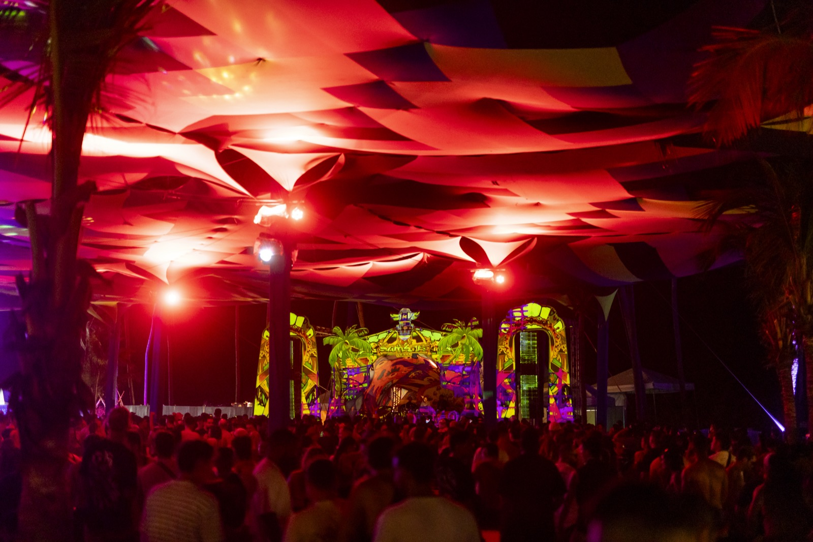
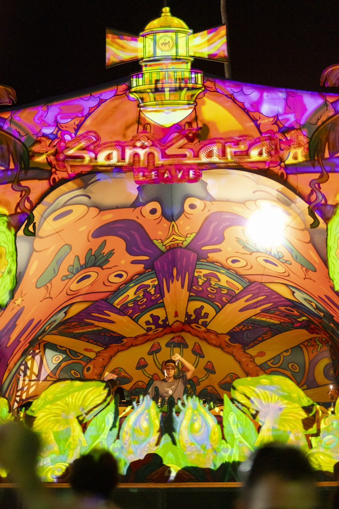
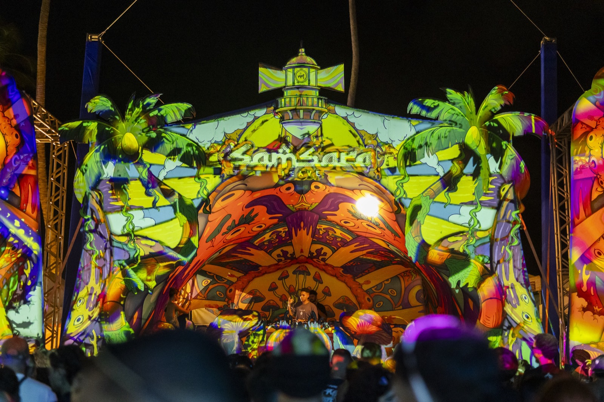

ATOMUZ
PSYTRANCESCIENCETECHNOLOGY
01 / O PROJETO
PROJETO
Atomuz é um projeto de progressive psytrance e zenonesque que explora o som, ciência, tecnologia e consciência.
Criado por Luiz Felipe, o projeto explora as profundezas da mente através de paisagens sonoras psicodélicas e imersivas — batidas hipnóticas, falhas interestelares, melodias marcantes e linhas de baixo profundas, inspiradas pela ciência, tecnologia e ficção científica.
A música é tratada como uma exploração de sistemas: precisa, imersiva e audiovisual, com uma linguagem futurista baseada em psicodelia.
Apresentações ao vivo nas maiores raves do Nordeste:
- 01Drop
- 02Intense
- 03Samsara
- 04Manipura
- 05Liquid Sky
02 / SOM
MÚSICA
Ouça o ATOMUZ nas plataformas oficiais.
03 / ÚLTIMO LANÇAMENTO
LANÇAMENTO

ATOMUZ
PRIMORDIAL PARTICLE
Primordial Particle, como o nome já diz, é a Partícula Primordial de muitas outras que estão surgindo. A faixa é desenvolvida através de atmosferas introspectivas, groove imersivo, melodias marcantes e sound design inteligente, levando o ouvinte a um cenário biotecnológico.
- MASTERIZAÇÃO
- Fractal Joke
- ARTE
- Oberas
- SELO
- Dense Nebula Records
05 / APRESENTAÇÕES
AO VIVO
SETS AO VIVO
- Atomuz in Dub OUVIR SET no SoundCloud (abre em nova aba)
- Samsara Leave OUVIR SET no SoundCloud (abre em nova aba)
- Intense Open Air OUVIR SET no SoundCloud (abre em nova aba)
- Multiverso Open Air OUVIR SET no SoundCloud (abre em nova aba)
- Drop Open Air OUVIR SET no SoundCloud (abre em nova aba)
- Pulse For Friends OUVIR SET no SoundCloud (abre em nova aba)
06 / AUDIOVISUAL
MÍDIA
-
-

-

-
-

-

-

-

-

-

-

-

07 / IDENTIDADE VISUAL
ÁTOMO
O átomo é o símbolo central do Atomuz — uma representação visual de matéria, energia, movimento e transformação.
Mova o cursor ou clique pelo campo: o sistema responde sutilmente, como uma interface científica experimental.
- 01NÚCLEOMatéria
- 02ÓRBITASEnergia
- 03ELÉTRONSMovimento
- 04CAMPOTransformação
08 / CONTATO
BOOKING
Para bookings, festivais, clubes, eventos e colaborações.
Preencha o formulário com os detalhes do evento. A resposta chega pelo e-mail informado.
- @atomuz_ (abre em nova aba)
- atomuz.audio@gmail.com